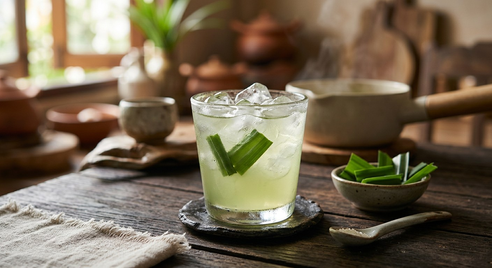

Pandan leaves boiled into a pale green, sweet-scented drink — sugared, salted, iced. The cooler every Thai garden provides free.

น้ำใบเตย is the drink made from bai toey — pandan, the leaf that scents and tints half the Thai dessert table — boiled on its own into the simplest herbal cooler there is. Kapook's classic version is barely a recipe: wash the leaves, cut them short, boil until the water changes colour, then sugar, a pinch of salt, and ice.
The technique has two details worth keeping. The water itself is the timer — Kapook reads the drink by the colour change, Wongnai's teacher krukul times it at ten to fifteen minutes, and PROUD drops the heat low and simmers until the pot turns green and fragrant. And the leaf is prepared three different ways: Kapook cuts it into pieces, PROUD knots the whole bundle before it goes in, and Wongnai's Zebra Bravo chops it finely and presses it under the water — the finest cut releases the most fragrance.
Then there's the no-boil school. KRUA.CO's version never simmers the leaves at all: blend pandan with a little water, strain, and stir the juice into warm water — "a pretty green drink, no sediment". Kapook, for its part, counts seven variations of the drink: mint, lemongrass, lime, agar jelly, honey-lime-soda, and a ginger tea built on the same leaf.
| Thai | English | Amount |
|---|---|---|
| น้ำเปล่า | Water | 1 L |
| ใบเตยหั่นเป็นชิ้น | Pandan leaves, cut | 6 leaves |
| น้ำตาลทราย | Sugar | 85 g |
| เกลือป่นเล็กน้อย | Salt | pinch |
| น้ำแข็ง | Ice | to serve |
The knotted bundle (PROUD): one 300 g bundle tied in a knot, 1 L water, 50 g white sugar, 1 tsp salt — low simmer, muslin-strained, lime optional. The big batch (krukul): 2 L water, 6 leaves, 150 g sugar, ½ tsp salt — 10–15 minute boil. The fine chop (Zebra): 2.5 L water, one clump of leaves, sugar to taste — 12 glasses, hot or cold. The no-boil blend (KRUA.CO): 12½ cups water, 1½ cups chopped leaves — 10 glasses.
Boil or blend. Kapook, PROUD and krukul boil the leaves; KRUA.CO blends them raw with a little water and stirs the strained juice into warm water — no boiling at all. The boil deepens the fragrance; the blend keeps the green bright and the drink sediment-free.
Cut, knot or chop. Kapook cuts the leaves into pieces, PROUD knots the whole bundle, Zebra Bravo chops them finely and holds them under the water. The finer the cut, the more fragrance — and the more powdery bits to strain out, which is why Zebra strains twice.
The sugar. 85 g per litre (Kapook), 50 g (PROUD), 75 g (krukul), to taste (Zebra), none at all (KRUA.CO). The plain drink is mildly sweet at most; it is a cooler, not a cordial.
The salt. A pinch (Kapook), a full teaspoon (PROUD), half a teaspoon per 2 litres (krukul) — the pinch every batch recipe keeps and half the home recipes forget. Zebra and KRUA.CO skip it entirely.
The strain. PROUD pours through muslin, Zebra through a fine sieve twice, Kapook simply lifts the leaves out. The straining is a clarity question: the same drink, brighter in the glass.
The lime. PROUD and Kapook's lime variation squeeze it in at the glass — PROUD notes it soothes the throat. The plain bottled versions sell without it.
This recipe is translated from the following Thai-language sources. Where they disagree, we've said so.
1. Kapook — "7 สูตรทำน้ำใบเตย เครื่องดื่มสุขภาพกลิ่นหอมสดชื่นเติมความเฮลธ์ตี้" (the recipe used here) — cooking.kapook.com
2. PROUD Sugar — "น้ำใบเตย" (the knotted 300 g bundle, muslin-strained) — proudsugarofficial.com
3. Wongnai — "สูตร น้ำใบเตย" by ครูกุลชญา ศิริไทย (the 2-litre batch) — wongnai.com
4. Wongnai — "สูตร น้ำใบเตยหอม" by Zebra Bravo (the fine chop, hot or cold) — wongnai.com
5. KRUA.CO — "น้ำใบเตย" by บุปผา กิตติกุล (the no-boil blend) — krua.co